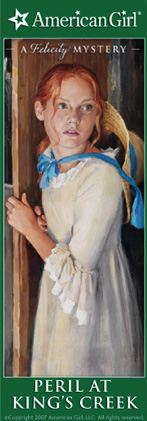

Congratulations! You’ve earned a special bookmark, featuring an illustration from one of the books in the American Girl mystery series.
Click below to download and print out your bookmark.

Please note: Acrobat Reader required to print out the bookmark